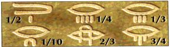
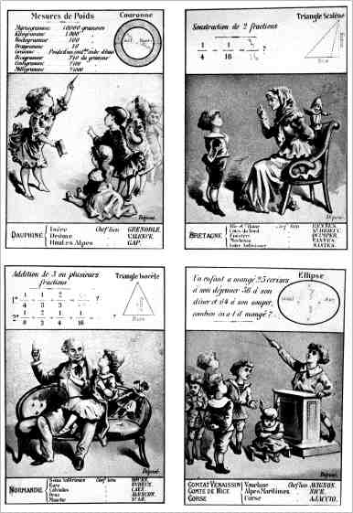

C) Les Fractions
|
Les fractions sont un instrument très ancien du calcul. Les égyptiens préféraient des fractions d'unités, c'est à dire à numérateur un ; ils indiquaient une telle fraction par son dénominateur muni d'une marque spéciale. Il y avait des signes spéciaux pour un demi, un tiers, et deux tiers. Des fractions générales sont représentées par des combinaisons additives de fractions d'unité. Par exemple on représentait 2/7 = ( 1/4 + 1/28 ) par : Ainsi le symbole de
gauche signifait 1/4 et celui de droite 1/28 .
Pour des raisons typographiques, des mathématiciens du 19e siècle ont proposés des notations a : b au lieu de a sur b ou encore a / b , notation qui se répand de plus en plus. Les précurseurs de nos fractions décimales sont les fractions séxagésimales des babyloniens. Sans aucuns scrupules, ces derniers continuaient les divisions après ce que l'on appellerait aujourd'hui la virgule alors qu'ils ne possédaient pas de signes de séparation entre les unités et les parties fractionnaires, pas plus que le zéro de la fin. Les fractions séxagésimales furent adoptées par les grecs et les calculateurs du Moyen-age. En 1585, Simon Stévin dit Simon de Bruges, publiait quelques pages auquel il donnait le titre bien caractéristique de : La disme enseignant facilement expédier par nombre entier sans rompuz tous comptes se rencontrant aux affaires des Hommes. Ce livre traitait des fractions.  Il proposait d'abolir les
fractions communes en faveur du calcul décimal et de décimaliser
la monnaie et les mesures.
 Cartes destinées à l'enseignement. On retrouve la décimalisation des nombres.
|